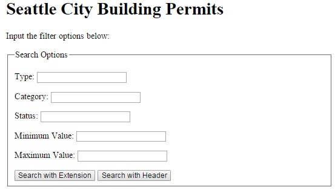
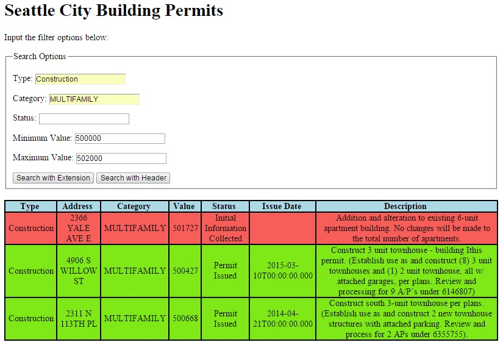

Welcome to this how-to guide for using the SODA Consumer API. SODA, or Socrata Open Data API, provides an easy to use interface for consumers of open data resources from governments, non-profit organizations, and NGOs hosted by Socrata. There are numerous datasets available for infrastructure, housing and development, finance, politics, education, public safety, transportation, and health.
This how-to guide will step through the process of getting started, requesting data, and handling the response. This guide includes the following sections:
The implementation example uses the dataset for current building permits from the Seattle city government. The code examples use an application created using the express framework in Node.js and request the data response in JSON. The intention of the examples is to show how to build various queries for requests and then use the response data to display meaningful information.
To get started using the SODA Consumer API, it is suggested you create a Socrata account and register your application to get an app token. The app token provides you with up to 1000 requests in a rolling hour period instead of being limited within the general pool of requests. Once you have created your Socrata account, you can register you application to get your personal app token. You'll need to provide a name and description for your application, with other optional information including the organization, website, callback prefix, and public status. The image below is the application registration for the example implementation with current building permits from the City of Seattle, with the app token redacted and the secret key hidden.
Once you have your account setup, the next step is to find the dataset of interest. There are several ways to do this.
The first method is to search for the organization of interest directly. A search for "City of Seattle Data" results in the open data page for the City of Seattle. You can peruse all of the allowable datasets for the city, and also access the SODA Consumer API by following the link for developers.
Another method utilizes Socrata Open Data which provides a table of the available datasets. You can filter by attributes such as type, customer name, launch date, and country. This will take you to the corresponding open data site for the entity you choose. From there, as with the direct search, you can look at the available datasets and navigate to find the developers page which will most likely include the SODA Consumer API.
The last method uses the Open Data Network. The Open Data Network search contains several filter options including keyword search, filtering by data category, and/or filtering by the data publisher. These filters are highlighted in green in the image below. Each result has a direct link to the API documentation page which includes the API endpoint along with the data fields available with the dataset. The link is highlighted in orange in the image below.
The API Endpoint is needed to create the request queries. There are a couple of options for finding it. If you used the Open Data Network to find your dataset, the API documentation page lists it next to a small gear, as seen in the image below. From this page you can also access the original dataset through the organization's website. In this example, you can access the Seattle API near the top of the page, as highlighted in green.
If you used the direct search to find your dataset, there is a SODA API section listed under export. The API endpoint is listed in this section, as highlighted in red in the image below.
People use the SODA Consumer API to get data from open datasets. You get this data by making GET requests using either a URL extension or through the request header. For the implementation example, Node.js is used to create an application to make requests using the SODA Consumer API to get data about the current building permits in Seattle and then display the results.
For the application in Node.js, the express framework is used. A brief explanation about the application built using the express framework is needed to understand the code used in this guide to make requests and handle the response data. Several modules are used including:
These modules are included in the application using the following code:
app is used throughout the application to access features from the express framework, such as handling GET and POST requests. The default layout used is the main layout, as indicated in the code above when including the express-handlebars module. This is a simplistic layout, including a dynamic body to be replaced by the handlebar template views. request is used to make the HTTP requests to the SODA Consumer API. The request(options, callback) function includes an argument for options and one for the callback. These will be discussed in more depth in the sections discussing requests using either the URL extension method or the header method.
The app token is kept in a separate file to keep this important information hidden. In this instance the separate file is named apiKeys.js and is included as a module in the application. The content of the apiKeys.js file is as follows:
As seen in the code above, there are two API keys listed in this file separated by a comma. The one for use with the Seattle city data application is the one denoted as seaData. To include this file in the application, var apiKeys = require('./apiKeys.js'); is used. Then throughout the application, the API key for the Seattle city data can be accessed from the included module using apiKeys.seaData. Note that the apiKeys.js file is included in the root directory of the application.
For the example implementation using the current building permits in Seattle, a basic form was created in the handlebar template home view to allow a user to specify filter values. For submitting the data, two buttons are also included to make the request using either the URL extension or header. The image below shows the simple form interface.
As seen in the image above, the form includes input for the permit type, category, status, and value range. The HTML code for this form utilizes input fields of type text, number, and submit.
The name of each input field is used to pull information from the request using the body-parser middlware, discussed in more depth in a later section. For example, the name of the minimum value input is valueGT. The submit input creates buttons, with the value attribute being displayed as the text on the button. The form uses the POST method when submitted which is handled in the application using app.post(). Within this function, the request is created and the resulting data is displayed through execution of the callback function of the request. If a GET request is made of the application page, such as when navigating to the page, app.get() is utlized to show the homepage with this form. A table of the results is only shown following a data request made while handling a POST request. This will be discussed in much greater detail on the Response Data page.
For using either method to make a request, you must first build the URL with the query components you are interested in. The API documentation page, reached by using the Open Data Network search described in Getting Started, includes an explanation of the fields available in the dataset. The explanation includes the field name, data type, a brief description, and a couple of examples showing it used in either the simple filter or query option. The dataset itself, as accessed using one of the other two search methods or from the link included on the API documentation page, displays the actual data in a table format. Each field is a column. Refer to the actual dataset to understand what values are used for the various fields. This will be necessary information for creating the queries. In the building permits example, a few fields of interest that are used in the queries and results are listed below along with their data type:
Several components make up the URL used in the GET request made to the SODA Consumer API to find data. They include the API endpoint and query string. If the request is made using the URL extension the result data type and app key are also included, but that will be discussed in that secton.
At the end of the Getting Started page is a section the describes how to find the API endpoint for your dataset. Each dataset has a built-in SODA API which is accessed using the API endpoint. The endpoint for the current building permit dataset from the city of Seattle is: https://data.seattle.gov/resource/mags-97de. When getting the API Endpoint you may notice it appended with a .json. This indicates the data type requested for the response, which will be discussed in later sections.
There are several options that can be included in the query string, using either a simple filter or query options. The following examples use a URL extension request which can be typed directly into the browser's address field. The later sections will discuss using the query string with a request made in the express framework application.
A simple filter may be used which pairs a field name with the value you are interested in, for example:
In this example, the request is made using the URL extension so the .json is included to indicate you want the response data as a JSON object. Following the result data type, a ? is included to indicate the start of the query. Following the ? the simple filter is included, permit_type=construction &category=MULTIFAMILY. This request will return all those building permits with a type of construction (permit_type=construction) and category of MULTIFAMILY (category=MULTIFAMILY). Several simple filters can be added to the URL by using a & to join them. Note, in this example, the app key is not present. This means the request will be part of the general pool of requests and limited as necessary.
The SODA Consumer API provides great query functionality using the Socrata Query Language (SoQL), which is similar to SQL. The documentation provided on the SODA website provides examples of using each of the options, so a brief description of the few options used in the example is included here, including an example showing how to combine several options in one query as that is not explicitly shown on the SODA website.
The following code shows a URL request including several query options, which will be discussed following the code. The .json is included at the end of the API endpoint to indicate the data type of the response and the ? is included next to indicate the start of the query. Also note that the app key is not included, so this request is made from the general pool of requests which may be subject to throttling.
As with the simple filter, a & is used to join several query options such as $where, $order, and $select. The first part of the query resembles the simple filter, permit_type=Construction &category=MULTIFAMILY, and is good to use when looking for one specific value of a field such as construction for the permit type. This is then joined with the $where option to include additional filters based on a range. In this case, those permits with a value greater than $500,000 and less than $502,000 are requested. To join the two ranges, note that the word AND is included, similar to SQL, and to perserve the URL encoding a + is used on either side for spaces. Next the $order option is included. This displays the results ordered by permit issue date in descending order, meaning the newest permits will be displayed in the first rows. Finally, the $select option is included to request the specific fields of data for the response. As with the current building permits dataset, there are 25 different fields. If you are only interested in 5 of those fields, the $select option will let you specify those to make the response data easier to work with.
To build the query string a form may be used to gather the filter parameters, as seen in the image above. In the building permit example, a series of conditional if-statements are used to build the query string, concatenating the terms and values if they are provided in the form. A snippet of these if-statements in JavaScript is listed below for the first three input fields for permit type, category, and status
The query string, reqStr initially includes a ? as this indicates the start of the query. If the input field is not empty as tested in each if-statement, for example if (req.body.type != ""), then the field name &permit_type= is added to the string along with the value of that type. The body-parser middlware is used to get the value from the request, as seen using the req.body appended with the name of the input field. If the user enters construction for the permit type in the form, then the value of req.body.type is construction.
This code used to build the query string is located within the function of the application handler for a POST request, which looks like app.post('/', function(req, res){...});. As seen in this code, req is the name given to the argument for the request and res is the name given to the argument for the response.
Using a URL extension request means that all of the pertinent data is included in the URL itself. This could be directly typed into the browser's address field and a page showing the results of the response will appear. However, to display the results in a more meaningful way in a table with selected fields, the request is made within the application so that the callback function can be used to handle the response.
The first step to making a request using the URL extension is to create the URL. This is comprised of the API endpoint, response data type, query string, and finally the app key. The response data types available for the current building permits in the city of Seattle include JSON, XML, and CSV, as found on the API documentation page. For the examples JSON is used. Following the methodology outlined above for getting the filter parameters from a form, the query string is built using the data entered by the user. The query string should include all simple filters, $where, $order, and $select options. Finally, the app key is appended to the URL. Here are the parts of the URL listed separately:
As mentioned above, the request(options, callback) function includes an options argument and callback argument. For making a request using the URL extension method, the URL is used as the option, while the function getResponse is included for the callback. This function will be discussed in more detail on the Response Data page. The following is example code used to make a request using the URL extension in the application. As seen, the URL is concatenated directly in the request function.
Using the header for a request requires building that header object and including it as part of the options argument of the request function. A URL is needed again, however, in this case it only includes the API endpoint and query string. The response data type and app key are included as part of the header object instead. The URL is constructed from the two parts in a similar fashion to the URL extension request. Here are the parts of the URL listed separately:
The JavaScript code for an options object is shown below:
An options object is created to store the URL and header for the request. The URL is listed first, being concatenated here. The URL ends with a comma, then the headers object is listed. The headers object consists of the 'Accept' key which has a correpsonding value that represents the data type of the response, in this example 'application/json'. The second key, 'X-App-Token', is for the app key and correspondingly has the app token, apiKeys.seaData for its value. Once the options object is created and defined, it is used directly in the request function as follows with the callback function getResponse:
The callback function getResponse that is included as an argument in the request function contains all of the JavaSCript code to handle the response received from the request. The nature of the callback is to call the provided function and execute that code once the response has been received. It is important to include all procedures involving the response data in this callback, otherwise if the response takes some time, there will not be data to use with those procedures and no results will be displayed. This section will decribe the handlebar template used to display the results, followed by an indepth discussion of the callback function itself.
The home.handlebars view that included the form discussed on the Requests page also includes the code needed to display the results in a table. For the building permits example the fields selected for the table include permit type, address, category, value, status, permit issue date, and the description. The code for this table is as follows:
The values enclosed in double curly braces, such as {{this.type}} indicate an item that will be populated dynamically with the content passed through the render function. The last statement of the callback function, assuming an error response code is not received, renders a new page using res.render('home', content); where 'home' is the name of the handlebar template view to show and content contains data to be used in that view. As will be explained in the next section, the content object contains a results array of objects. This name matches with {{#if results}} used in the 'home' view. If the results array is not empty, the table is created and each element of the array is iterated through using {{#each results}}. this refers to the current element of the array and pulls the value for the specified key from the object in the element. For example, {{this.type}} will display the value of type from the array element object. The image below shows the results as populated in the table for the indicated filter parameters:
For reference, the request that was made to result in this data is the following using the URL extension method:
The following sections describe procedures of the callback function getResponse.
The prototype for the callback function is function getResponse(err, response, body). The first task accomplished in this function is checking if the status code is less than 400, indicating a successful request and response. If it is 400 or greater, an error occured. To check for an error code, the conditional statement if (!err && response.statusCode < 400) is used. If there is no error in the err argument and the statusCode, which is a key in the response object, is less than 400, the remaining statements are executed to render the home view with the resulting data. If this conditional statement is false, a corresponding view with an error code is rendered instead. The SODA Consumer API has a good listing of the possible response status codes and what they mean in the provided documentation.
The first step in handling the response data is to parse it. As an example, this can be accomplished using var searchResults = JSON.parse(body);. This parses the body argument containing the response data into a JSON object so that the fields, represented as keys, can be accessed to determine their corresponding value. In the function called for app.post(), an empty content object, var content = {}; and an empty results array, var results = []; are created. The data from the response will be added to these, and then used to render the view. The results array is an array of objects that contain the key-value pairs needed to populate the view, as shown above. Any key represented by {{this.key}} should be included in the object added to the results array.
The response body may include any number of data rows. To iterate through them all, a for in loop is used, for (var item in searchResults), where item represents the current index. Remember the parsed response data was assigned to searchResults. The first task within the for loop is to determine the background color for in row based on the permit status. If the permit has been issued, the background color of the row is set to green (#7FE817), otherwise it is red (#F75D59). The conditional statements in JavaScript used to determine the color are included below:
As mentioned earlier, there are 25 different data fields in the current building permit dataset. Regardless of if the request includes a select option, the fields of interest need to be extracted from the data. Using the following URL extension request,
the following response data is received
Three data rows are returned for this narrow search of the current building permits data, however many searches will produce tens to hundreds of rows, so using the for in loop is necessary as it would be too much data to extract directly. These three rows translate to three elements in searchResults. Each data row represents an iteration in the for in loop. In order to store the required data needed for rendering the home view, an object is created with the key-value pairs of interest and is added to the results array using the array push method. The following code is used to create each object and push it to the results array.
For each key-value pair, the key corresponds to a key used in the home view presented above. For instance, a pair is made in the object by using "address":searchResults[item].address. The "address" corresponds to the code in the view {{this.address}}. Now that the key name has been established, the value needs to be assigned using searchResults[item].address. Remember that item is the current index in the for in loop. This accesses the corresponding element of searchResults[item] and accesses the value for .address as listed in the response data shown above. This is done for each required key-value pair to create the object, which is then pushed to the results array. As the background color of each row in the table is also specified, this key-value pair also needs to be included in the object pushed to the results array. This is done using "statusColor":color, which uses the color variable assigned earlier using the conditional statements.
After the for in loop has concluded, the results array is then added to the content object using content.results = results;. The content object, now that it includes the results data, is then passed to the render function res.render('home', content); along with the view to render, home, which results in a page showing the results table as seen in the image above.
The JavaScript code for the getResponse callback function is shown in its entirety below. Note that this function is one part of the overall POST handler, app.post('/', function(req, res){...});. The POST handler also includes all of the code necessary to create and send the request using either method depending on which button is used to submit the form.